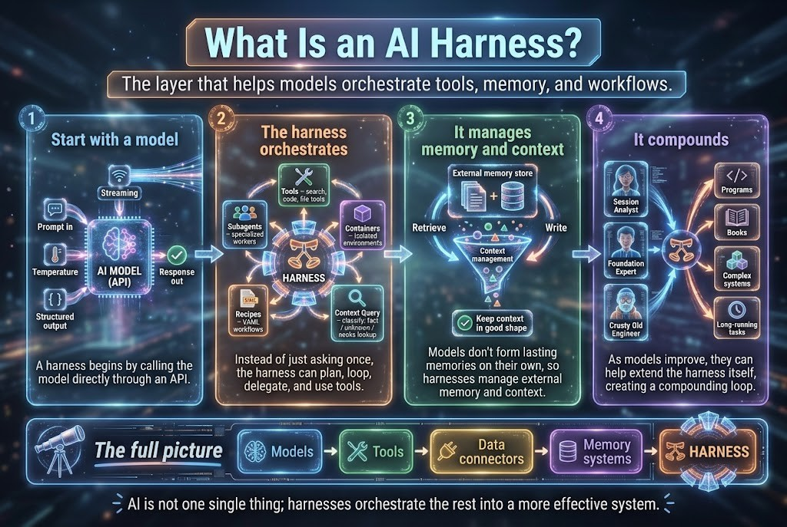

Yapay Zekada Ustalaşın ve Geleceği İnşa Edin
Kırılgan botlar üretimde çöktüğünde ve yönetilemeyen entegrasyonlar operasyonel karmaşa yarattığında kurumlar zorlanır. Kurumların yönetim yükünü sadeleştirmesi ve tamamen stratejik adaptasyona odaklanabilmesi için Yönetilen Yapay Zeka Bot Hizmetleri (MSP) ürünümüz kapsamında üretime hazır botlar inşa ediyor, onarıyor ve yönetiyoruz.
Açık ve kendi kendine öğrenmeye olan sarsılmaz bağlılığımızla, tüm eğitim müfredatımız öğrenciler için %100 ücretsizdir. Profesyonelleri ise otonom bot filolarını güvenle uçuracak öncü Teslimat Pilotu (Delivery Pilot) rolünde eğitip sertifikalandırıyoruz.
Yapay zeka botu yazmak kolaydır; ancak onun kurumsal test ortamlarında, güvenlik denetimlerinde ve model sapmalarında ayakta kalmasını sağlamak asıl zorluktur. Bot mühendisliğini, entegrasyon onarımlarını ve sürekli filo yönetimini üstleniyoruz — kurumlar yönetimi sadeleştirip hızla adapte oluyor.

Kurumsal Harness: Yalnızca modeller üretime hazır botlar oluşturamaz. Harness (koşum takımı) araçları orkestre eder, bellek izolasyonunu sağlar, doğrulama kapılarını yürütür ve bilişsel yetenekleri güvenle birleştirir.
# Kurumsal bot filosu test ve çalışma ortamında denetleniyor
$ dp-harness verify --fleet=enterprise-prod --auto-heal
[09:21:04] 🤖 Çoklu Model Yönlendirici: Claude 3.7 / GPT-4o / Gemini Pro ... [TAMAM]
[09:21:05] 💾 Bağlam Deposu: Vektör Bellek & Redis Önbellek senkronizasyonu ... [%100]
[09:21:06] ⚠️ Bot #DP-104 (CertExpiryMonitor): Dahili CA üzerinde webhook zaman aşımı
[09:21:06] 🛠️ HARNESS ONARIM HATTI TETİKLENDİ:
↳ Kırık adaptör yalıtılmış kum havuzuna alındı ... [TAMAMLANDI]
↳ Şema sözleşmesi yeniden sentezlendi & mTLS belirteci yenilendi ... [YAMALANDI]
↳ Regresyon test seti çalıştırıldı (18 birim test başarıyla geçti) ... [%100 TAMAM]
[09:21:07] 🛡️ Yönetişim: SOC 2 & HIPAA denetim günlüğü sabit depoya işlendi
[09:21:07] 🚀 Durum: 28/28 Bot Sağlıklı | Sıfır Manuel Müdahale | SLA: %99.99
Otonom ajanlar beklenmedik veri yüklerinde senkronizasyon ve araç çağırma hataları yaşar. Dayanıklı botlar inşa ediyor, kırılgan çalışma ortamlarını onarıyor ve kesintisiz çalışma için sağlam CI/CD test düzenekleri kuruyoruz.
Kurum içi bot bakım ekipleri kurma zahmetini ortadan kaldırın. Yönetilen Yapay Zeka Bot Hizmetleri ürünümüz; 7/24 gözlemlenebilirlik, güvenlik bariyerleri (SOC 2, HIPAA, GDPR), ölçeklendirme ve SLA garantili hata giderme sağlar. Siz stratejiye odaklanın, botları bize bırakın.
Bilgi engellenemez. Kendi kendine öğrenmeye derinden bağlıyız: İnteraktif simülasyon laboratuvarlarımız, bot mimarilerimiz ve yapay zeka öğrenme yollarımız dünya çapındaki tüm öğrenciler ve araştırmacılar için tamamen ücretsizdir.
Yapay zeka kod üretimini hızlandırdıkça, darboğaz kodlamadan kokpit yönetimine kayar. Mühendisleri ve profesyonelleri; bot filolarını yöneten, teknik borcu eriten ve kurumsal teslimatı güvenceye alan Teslimat Pilotları (Delivery Pilots) olarak yetiştirip sertifikalandırıyoruz.
Hızlı Yapay Zeka Çıtayı Ekiplerin Aşabileceğinden Daha Hızlı Yükseltiyor
Her çeyrek yeni araçlar, çerçeveler ve 'en iyi uygulamalar' getiriyor. Çalışanlarınızdan hem ayak uydurmaları hem de teslim etmeleri bekleniyor. Bugün gerekenler ile ekibin bugün yapabildikleri arasındaki boşluk bir eğitim bütçesi kalemi değil; teslim tarihlerinizi sessizce riske atan asıl unsurdur.
Sorun vizyon veya hırs eksikliği değil; strateji ile onu uygulayacak eller arasındaki boşluktur.
Delivery Pilot bu boşluğu üç yolla kapatır — hepsi uygulamalı, hepsi ekibinizin içinde:
Kendi kendine öğrenenleri sertifikalı Teslimat Pilotlarına, Teslimat Pilotlarını ise kurumsal Yönetilen Yapay Zeka Bot Hizmetlerine dönüştürüyoruz.
Kendi kendine öğrenmeye olan bağlılığımızla, öğrenciler tüm materyallere %100 ücretsiz erişir. Profesyoneller ise kurumsal yapay zeka harness'larını yönetecek yetkinlikte donanımlı Teslimat Pilotları olmak üzere öncü laboratuvar sertifikalarına hazırlanır.
Sertifikalı Teslimat Pilotları, anahtar teslim Yönetilen Yapay Zeka Bot Hizmetlerimiz altında kurumlar için botlar inşa eder, onarır ve çalıştırır. Kurumlar operasyonel kaosu ortadan kaldırır, yönetimi sadeleştirir ve hızla adapte olur.
Herkes uygulama yazabildiğinde, üst düzey eğitimli profesyoneller bilgisayarları ve robotları denetleyen teslimat pilotlarına dönüşür.
Doğal dil programlama, akıllı ajan düzenekleri ve üretken modeller sayesinde alan uzmanları her yerde özel uygulamalar inşa ediyor. Artık darboğaz kod yazmak değil; onu güvenli şekilde yönetebilmektir.
Mühendisler komuta güvertesine yükselir. Teslimat pilotları otonom ajan filolarını yönetir, korkulukları uygular ve canlı sistem sonuçlarını garanti eder. İnsanların sertifikalanmasını sağlıyor ve işletmelerin MSP modelimizi kullanmalarına rehberlik ediyoruz.
Çoğu kurumsal yapay zeka projesi strateji yüzünden başarısız olmaz. Yürütme/teslimat yüzünden başarısız olur.
Her seferinde aynı üç engelde tökezlerler: uzmanlaşmış beceri eksikliği, biriken teknik borç ve şu kritik soruyu cevaplayacak kimsenin olmaması:
"Bununla, burada, kendi sistemlerimizde ne yapacağız?"
"Yapay zeka kullanmalıyız" demek ile üretimde güvenle çalışan bir sistem arasındaki mesafe teknik borç ve yetenek açıklarıyla doludur. Bu boşlukları kapatmak asıl iştir ve çoğu programın atladığı kısımdır.
İşi ekibiniz için değil, ekibinizle birlikte yapmak üzere ekibinize uzman bir Delivery Pilot dahil ederiz. Gerçek çözümler üretir, beceriyi yaparak aktarır ve ekibinizi sistemi yürütebilecek durumda bırakırlar.
Strateji ve yürütme nihayet buluşur. Yapay zeka girişiminiz başlar, ölçeklenir ve en önemlisi biz ayrıldıktan sonra da çalışmaya devam eder; çünkü yetkinlik artık ekibinizdedir.
Vaatler ve yürütmenin tutarlı kalmasını sağlamak için doğrudan ekibinize kazandırılan teslimat yetkinlikleri.
Bir pilot sistemleriniz, kısıtlamalarınız ve kod tabanınız üzerinde çalışır — böylece inşa edilenler bir demo havuzunda değil, gerçekte ihtiyaç duyulan yerde çalışır.
GDPR, SOC 2, HIPAA — sonradan eklenmek yerine iş sırasında teslimat kararları olarak ele alınır. Sertifikalandırdığımız kişiler bunu bu şekilde korumayı bilir.
Her çözüm, ekibiniz tarafından sürdürülebilir olacak şekilde inşa edilir; kimsenin dokunamadığı bir sonraki yük haline gelmez. Borç yönetimi teslimatın bir parçasıdır.
Süresi dolan sertifikalar, sessiz arızalar, yük altında kırılan manuel süreçler — bir pilot bunların üretime ulaşmasını engelleyen izleme ve devir süreçlerini kurar.
Amaç tek bir teslimat değildir. Biz olmadan bir sonrakini inşa edebilecek bir ekiptir. Her çalışma yalnızca artefaktlarla değil, yetkin insanlarla sona erer.
Devir teslim yaptığımızda, ekibinizden kimin bunu yönetmeye yetkili olduğunu tam olarak bilirsiniz — çünkü onları gerçek teslimat üzerinden değerlendirip sertifikalandırırız.
Kritik kurumsal ortamlarda ham içgüdülerin ve rastgele istem denemelerinin neden başarısız olduğunu; klinik hassasiyet, derin mekanik kurulum ve sertifikalı disiplinin modern bir Delivery Pilot'ı nasıl tanımladığını keşfedin.
Bağımlılık değil, yetkinlik bırakmak üzere tasarlanmış dört adımlı bir çalışma modeli.
Hiçbir şey canlıya alınmadan önce, ekibinizin mevcut teslimat yetkinliğini girişimin talep ettikleriyle eşleştiririz: beceriler, altyapı hazırlığı ve daha sonra ortaya çıkacak teknik borç ve güvenlik riskleri. Boşlukların tam olarak nerede olduğuna dair net bir resim elde edersiniz.
Yol haritasını ve mimariyi, sistemi sahiplenecek kişilerle birlikte oluştururuz; böylece plan ekibinizin anladığı ve savunabileceği bir plan olur — gelip göz ardı edilen bir doküman değil.
Pilot ekibinizin içinde çalışır, senaryolarınız üzerine kurulu uygulamalı simülasyon atölyelerinde gerçek yapay zeka ajanı çözümleri sunar. Beceriler aktarılır çünkü ekibiniz yan yana üretir — boşluk tam burada kapanır.
İşi ileriye taşıyabilecek kişileri sertifikalandırır ve sistemi çalışır halde tutacak izleme ve koruma önlemleriyle temiz bir devir teslim yaparız. Kaçamadığınız bir destek sözleşmesiyle değil, kalıcı yetkinlikle baş başa kalırsınız.
Gömülü bir pilotun maliyetini en hızlı karşıladığı alanlar. Yapay zeka destekli teslimatın nasıl çalıştığını görün →
Süresi dolan sertifikalar, tamamen önlenebilir üretim kesintilerine neden olur. Pilotlar; izleyen, zamanında yenileyen ve paydaşları bilgilendiren ajanlar inşa eder — tekrarlayan bir krizi çözülmüş bir probleme dönüştürür ve ekibinize bunu sürdürmeyi öğretir.
Gerçek müşteri ihtiyaçlarını karşılayan akıllı ajanlar — kara kutu olarak bırakılmak yerine, politikalarınıza göre inşa edilmiş ve sistemlerinizle entegre.
Ekibinizin modellerin inşasına yardım ettiği için gerçekten sürdürebileceği tahmin ve karar destek sistemleri.
Belge türlerinize ve uyumluluk gereksinimlerinize göre otomatikleştirilmiş veri çıkarma, sınıflandırma ve analiz.
Mevcut kalite güvence sürecinizi tamamen değiştirmek yerine ona uyum sağlayan yapay zeka odaklı kalite kontrolü.
Delivery Pilot, ekibinizin içine uzman teslimat yetkinliği yerleştiren bir programdır — öğrenilmesi gereken başka bir platform değil.
Çoğu kurum yapay zeka vizyonu veya yapay zeka araçları eksikliği yaşamaz. Eksik olan; bu araçları üretimde güvenle çalışan ve çalışmaya devam eden bir sisteme dönüştürecek uzmanlaşmış, uygulamalı teslimat becerisidir. İşte kapattığımız boşluk budur.
Çalışanlarınızla birlikte gerçek çözümler üreten, işi yaparak beceri açıklarını kapatan, teknik borcu ve güvenlik uyumluluğunu süreç içinde yöneten sertifikalı Delivery Pilot'larını ekibinize dahil ediyoruz. Devrettiğimizde, yetkinlik ekibinizde kalır.
Büyüme modelimiz: Güven ve erişim yoluyla — kurucumuzun YouTube kanalında gerçek teslimat içgörüleri paylaşıyor ve küresel pazarlarda teslimat yapan iş ortağı ağımız aracılığıyla kapasitemizi genişletiyoruz.
Önlenebilir Kesintilerin Engellenmesi
Bağımsız Teslimat Yetkinliği
Canlıya Alımda Hızlanma